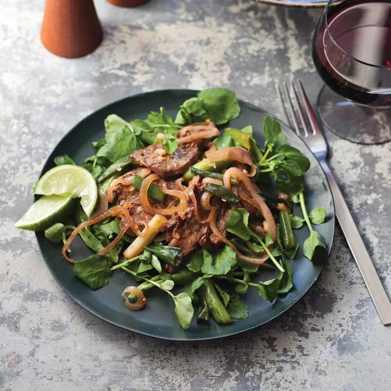

Shaking Beef is a vibrant dish of tender seared beef tossed with onions and a flavorful sauce, served over fresh greens and garnished with lime for a zesty finish.
Ingredients
- 1 pound filet mignon, cut into 1-inch pieces
- 3 1/2 tablespoons sugar
- 1/3 cup plus 1 tablespoon canola oil
- 3 tablespoons light soy sauce
- 3 tablespoons Asian fish sauce
- 2 tablespoons white vinegar
- 1 teaspoon rice wine (optional)
- 6 scallions, cut into 1-inch pieces
- 1 small red onion, thinly sliced
- 3 garlic cloves, minced
- 1 tablespoon unsalted butter
- Watercress and lime, for serving
Steps
- In a bowl, toss the meat with 1/2 tablespoon of the sugar, 1 tablespoon of the oil and 1 teaspoon each of salt and pepper. Let stand at room temperature for 1 hour.
- In a small bowl, whisk the remaining 3 tablespoons of sugar with the soy sauce, fish sauce, vinegar and rice wine, if using.
- Heat a large skillet until very hot. Add the remaining 1/3 cup of oil and heat until smoking. Add the meat and cook over high heat undisturbed for 1 minute, until browned. Turn the meat and cook for 1 minute longer. Tilt the skillet and spoon off all but 1 tablespoon of the oil. Scatter the scallions, onion and garlic over the meat and cook for 30 seconds. Stir the soy mixture and add it to the pan, shaking to coat the meat; bring to a boil. Add the butter and shake the pan until melted.
- Line a platter with watercress and pour the shaking beef and vegetables on top. Serve with lime wedges.
Home